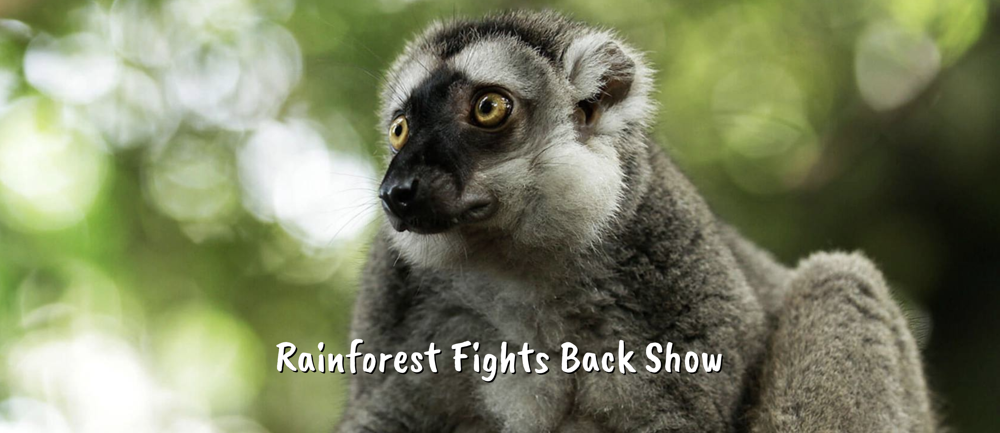

Planning your visit
Map
Zones and Animals
Things to do: Shows
Planning your visit
Address: 80 Mandai Lake Road Singapore 729826
Opening hours: 8.30am - 6.00pm (Last entry at 5.00pm)
Booking of Tickets:
Please arrive no later than 45 minutes from your selected time.
If the park’s capacity has been reached, you may be required to wait till there is availability.
Parks are operating with limited capacity, do book now:
Book Here!
Getting there:
Public Transport, Mandai Khatib Shuttle, Mandai Express (Bedok, Sengkang and Tampines),
Direction Bus Services from the City, Self-Drive or by Taxi.
More information
Back to Top
Map
PDF
Back to Top
Zones and Animals
Australasia
While most of the world’s marsupials are found in Australia, marsupials also occur naturally in New Guinea, Indonesia and surrounding islands and the Americas. Besides the grey kangaroos and agile wallabies from Australia, this exhibit also showcases the tree kangaroos from Papua New Guinea.
Some animals in this zone:
Elephants of Asia
Revered in Hinduism and Buddhism, elephants have profoundly influenced the Asian way of life since their domestication 4,000 years ago. Featuring Burmese-style architecture, this one-hectare exhibit showcases these largest of living land animals and their associated history and culture.
Some animals in this zone:
Fragile Forest
Step into this 20,000 cubic metre biodome that mimics a tropical rainforest habitat. Come face-to-face with its furry and feathered inhabitants as you journey through the various strata of the rainforest. What's more, close encounters of the spineless kind await you at Discovery Outpost!
Some animals in this zone:
Great Rift Valley of Ethiopia
Together with the nimble Nubian ibexes, the Hamadryas baboons rule the rugged rockscape. Explore further to meet the meerkats, black-backed jackals and rock hyraxes. Also stop by the rustic dwelling huts recreating life in the Konso and Amharic villages.
Some animals in this zone:
Primate Kingdom
So why is this exhibit called Primate Kingdom? Each primate species is designated its own ‘island’. Add to that a landscaping of trees, a surrounding moat and you get ‘castles’ in which our furry rulers dwell. Here, our primates need not be king of the jungle to rule their own kingdom!
Some animals in this zone:
Rainforest KidzWorld
Swing, splash, slide, hop, jump! Let your hair down and play your heart out here. Take a spin on the Wild Animal Carousel, say hello to the falabellas and hop by Buddy Barn to cosy up to some furry friends.
Some animals in this zone:

Reptile Garden
RepTopia. Tortoise Shell’ter. Sungei Buaya. All these exhibits and more can be found on the sprawling grounds of Reptile Garden. Come enter the dragon’s lair and learn more about the lives and loves of these prehistoric creatures that have been around since the age of the dinosaurs.
Some animals in this zone:
RepTopia
Home to over 60 species of reptiles and amphibians, a third of which have never been seen here before, RepTopia takes you on a tour of four unique geographical zones. Multi-species displays, keeper demos, interactive stations and play elements interface to make this a most ‘snake’-tacular zone.
Some animals in this zone:

Tortoise Shell-ter
Tortoise Shell-ter is a naturalistic sanctuary offering optimum conditions for our chelonian collection to breed and display their natural behaviour. Here, you can learn about our ‘shell-ebrities’ - some of the world’s rarest tortoises - and ongoing conservation efforts to increase their numbers.
Some animals in this zone:

Treetops Trail
Replicating a rainforest habitat, Treetops Trail showcases
animals at different layers of a forest.
Some animals in this zone:
Wild Africa
Africa boasts a diverse range of habitats, from tropical rainforests to harsh deserts. The animals found there have adapted accordingly in no end of amazing ways. As a result, the continent counts among its endemic species the tallest, the fastest and the largest creatures on land.
Some animals in this zone:


Back to Top
Things to do: Shows
Love a wet and wacky time? Then the high-energy antics of our mischievous California sea lion are sure to make a splash! Witness our sea lion gracefully glide on water, effortlessly balance a ball on its nose as well as many special moments that will tickle your funny bone and tug at your heart strings at the same time.
Our adorable performer is sure to leave a lasting impression, as well as get you thinking about how we can all do our part to save the ocean.
Open your eyes to the special skills and important roles that domesticated animals play in our lives in our Animal Friends Show.
Many of our animals were once abandoned pets. Now, they make a difference by inspiring people every day to love and care for all animals with whom we share our forests as well as our homes. Catch the classic cat-and-mouse escapades that you usually see in cartoons come to life. See how a dog’s acute sense of smell comes to the rescue. And discover who’s capable of gravity-defying jumps.
With plenty of laughs guaranteed, this show demonstrates how we can all get along – even cats and mice, and cats and dogs. Most of all, these domesticated performers inspire us to love and care for all animals – be it in the wild or within our own homes.
And if you really want to show your love for our four-legged stars, feel free to pat and snap a photo with them after the show.

The Elephant Presentation showcases how magnificent these megaherbivores are. Besides sharing interesting animal facts and details, our elephant keeper-presenters, who care for the elephants daily, will let you in on the unique quirks and personalities of our five female Asian elephants.
No visit to Elephants of Asia is really complete without this experience of watching Komali, Jati, Gambir, Intan and Aprila forage, explore, and interact with one other and the keepers. You may just be one of the guests that gets to feed them.^ The animal presentation promises to be an educational experience, one that aims to foster and convey conservation awareness. Come find out how intelligent, sociable, strong and yet gentle elephants really are!

This entertaining and engaging show features a diverse range of rainforest animals. Be awed as they show off their dexterity by jumping and flying above.
Find out how these animals’ lives have been affected by humans and why they do not necessarily make good pets. You may even get a chance to touch a snake and a slithery surprise awaits one lucky volunteer, who'll enjoy the photo opportunity of a lifetime!
Show Details
| Show |
Location |
First Show |
Second Show |
| Splash Safari |
Shaw Foundation Amphitheatre |
10.30am |
5.00pm |
| Animal Friends |
Rainforest Kidzworld Amphitheatre |
1.30pm |
4.00pm |
| Elephant Presentation |
Elephants of Asia |
Temporarily Suspended |
Temporarily Suspended |
| Rainforest Fights Back |
Shaw Foundation Amphitheatre |
12.00pm |
2.30pm |
Back to Top